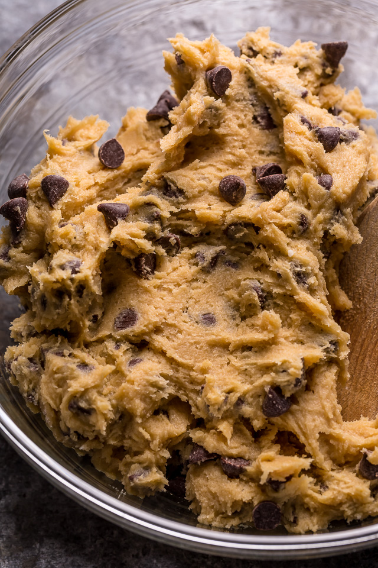

My favorite chocolate chip cookie recipe.

These will be the best chocolate chip cookies you will ever eat. They are crispy on the outside and soft, chewy and filled with gooey pools of chocolate on the inside. Created by the legendary bakers at tasty, this recipe is easy to bake and it a must for anyone with a sweet tooth or a love for cookies.

Ingredients
- ½ cup granulated sugar(100 g)
- ¾ cup brown sugar(165 g), packed
- 1 teaspoon salt
- ½ cup unsalted butter(115 g), melted
- 1 egg
- 1 teaspoon vanilla extract
- 1 ¼ cups all-purpose flour(155 g)
- ½ teaspoon baking soda
- 4 oz milk or semi-sweet chocolate chunks(110 g)
- 4 oz dark chocolate chunk(110 g), or your preference
Preparation
- In a bowl combine the melted butter, sugar and salt until smooth with no lumps.
- Into the same container whisk the vanilla with the egg until smooth and falling in smooth ribbons.
- Sift the flour into the baking soda in the mixture until just combined, do not over mix! The cookies will be more like cake if you do.
- Fold chocolate chips and chocolate chunks into your dough then chill for at least 24 hrs, this will deepen the cookies flavor.
- Preheat the oven to 180°C
- Use an ice cream scooper to get symmetrical balls and line them on parchment paper
- Bake them for 12-15 minutes, until the edges turn brown
- Let them cool and enjoy!